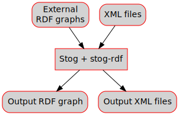

This plugin allows to easily specify RDF triples within documents, to produce a RDF graph for the whole generated site. It also permits executing Sparql queries to include data in the generated pages.
The following figure summarizes the way it works:
Additional rewrite levels are defined:
opam install stog-rdf
Stog-rdf is hosted on Github. You can clone the git repository:
git clone git@github.com:zoggy/stog-rdf.git
cd stog-rdf-XXX make all install
(you must have OCaml-RDF >= 0.8.0 installed). This will install the stog-rdf package with ocamlfind.
To use:
stog --package stog-rdf ...
You can also build a custom stog executable, linked with the plugin:
mk-stog --package stog-rdf -o mystog ...
If you want to use mysql or postresql backends, do not forget to also link the required packages, for example for mysql:
mk-stog --package stog-rdf,rdf.mysql -o mystog ...
Stog-rdf defines a new rewrite rule rdf associated to level 200. Each <rdf> node corresponds to a new triple whose subject is the current document url, or the current block id of the current document if the <rdf> node is contained in a XML node with an id attribute. This triple is added to the graph associated to the current document.
Another function, associated to level 201, merges all RDF graphs into one graph and dumps this graph into a file. The name of this file is set in the .stog/config-rdf file (default is graph.rdf).
<page title="..."> ... <rdf pred="..." obj="..."/> ... </page>
Subject is the document url, pred is the IRI of the predicate (possibly of the form prefix:term). obj is the IRI of the object.
<page title="..."> ... <rdf pred="..." href="..."/> ... </page>
Subject and predicate are as in the first example. href is of the form path[#id] to indicate an document of the site, and eventually a node id in this document. This is reduced to the complete IRI of the document or block referenced by document#id.
<page title="..."> ... <p id="id1"> <rdf pred="..." .../> </p> </page>
Here the subject is the IRI formed by the document url and the id of the <p> node, for example http://my.example.com/foo/page1.html#id1 if my document has path foo/page1 and base url of the site is http://my.example.com.
To add the triples, the <rdf pred="pref:term" ...>...</rdf> node is rewritten to
<rdf:Description rdf:about="<document-url>[#id]"> <pref:term ...> ... </pref:term> </rdf:Description>
and this XML tree is parsed using OCaml-RDF RDF/XML parser to add the triples to the document graph. If a href or obj attribute was used, the corresponding IRI is associated to the `rdf:resource` attribute in the rewritten node:
<rdf:Description rdf:about="<document-url>[#id]"> <pref:term rdf:resource="..." ...> ... </pref:term> </rdf:Description>
and the whole <rdf:Description> node is parsed by the RDF/XML parser.
It is possible to insert triple with a subject not being the current document or a block of the current document, using the subject attribute:
<rdf subject="http://foo.bar" pred="..." .../>
It is sometimes useful to force the subject to be the current document url even if the <rdf> node is under a XML node with an id:
<p id="..."> <rdf subject="<doc-url/>" pred="..." .../> </p>
Namespaces used in RDF triples in the site must be declared in the .stog/config-rdf file.
The rdf and site namespaces don't need to be specified and are automatically handled respectively as
rdf:http://www.w3.org/1999/02/22-rdf-syntax-ns# site:<site base url>
(the site base url is the one specified with stog:site-url in the main stog document).
External graphs can be loaded at startup time or with the <rdf-load> rule.
Once loaded, these graphs can be used in Sparql queries, using FROM or FROM NAMED clauses.
Graphs to load at startup are given in the sources parameter of the .stog/config-rdf file. For each graph, we indicate its name (an IRI), and options. Options describe where to load the graph from.
Here is an example of configuration file describing two graphs to load, one from a file, and one from a MySQL database:
(* pairs (uri, name) specifying namespaces *) namespaces = [("http://super-namespace.net/", "super")] (* name of main graph output file *) graph_file = "graph.rdf" (* pairs (uri, options) specifying graphs to load and associate to uris. Options is a list of pair (name, value). To load a load, use ["file", "myfile.ttl"]. Other options can be given to access graphs from a database (see OCaml-RDF's Rdf_graph documentation) *) sources = [ ("http://foo.net/", [ (file, "foo_net.ttl") ]) ; ("http://foo.bar.net/", [(storage, mysql2); (database, genet_example); (user, genet); (host, localhost); (password, ""); (port, "3306")]) ]
The options associated to each IRI are the options passed to the Rdf_graph.open_graph function in OCaml-RDF.
By default, files are expected to be in Turtle format. Setting the "format" option to "rdf/xml" indicates that the file is in RDF/XML format.
A graph can be loaded when the XML node <rdf-load> is encountered. This rule is registered in level 202.
The general form of using this rule is:
<rdf-load att1="..." att2="..."/>
Each attribute defines a pair (name, value) used as an option. The complete option list is used as the option lists specified in the .stog/config-rdf file (see Loading graphs at startup).
The following code loads a graph named http://foo.net/ from a Turtle file foo_net.ttl in the same directory as the source file of the current document:
<rdf-load file="./foo_net.ttl" name="http://foo.net/"/>
If the filename is not explicitely relative to the current directory (i.e. if it does not start with "." or "..") then is it used as is.
The following code loads a graph named http://foo.bar.net/ from a MySQL database, using the given options:
<rdf-load name="http://foo.bar.net/" storage="mysql2" database="genet_example" user="genet" host="localhost" password="" port="3306"/>
If no file attribute is given, and the <rdf-load> node is not empty, then the PCDATA content of the node is used as Turtle code describing the triples to load in the graph. For example:
<rdf-load name="http://foo.bar.org/"><![CDATA[ @prefix toto: <http://toto.net/> <http://foo.bar.org/toto> a toto:file . ]]></rdf-load>
The <rdf-select> rule, registered in level 220, allows to execute Sparql 1.1 queries, either on the graph built during rewriting of documents (see Defining RDF triples) or on loaded graphs (see Using external graphs).
The <rdf-select> rule takes the following parameters:
The parameters for the <rdf-select> rule are given in the following way:
<rdf-select [query="..."] [tmpl="..."] [sep="..."]>DATA</rdf-select>
If DATA does not contain XML nodes and DATA is not empty, then DATA is used as query, even if the query="..." attribute is given.
If DATA contains XML nodes, they are used to override the previous definition of the query, the template and the separator. For example:
<rdf-select> <query>SELECT ?url ?name WHERE { ... }</query> <tmpl><li><a href="<url/>"><name/></a></li></tmpl> </rdf-select>
If the template is specified in the attribute tmpl="s", then s is considered as being a template file. If the template is specified in a <tmpl> node, then the template is the content of the node.
The separator is always "inline", whether it is given in the sep="..." attribute or in the <sep> node.
If the query is specified in the attributes and in a <query> node, only the content of the node is used.
Additional attributes and additional nodes are used to enrich the environment used when applying the template.
The namespaces defined in .stog/config-rdf are used to automatically define prefixes at the beginning of the query; they do not have to be declared again in the query.
For each solution of the query, the template is applied. The variables appearing in the solution (the variables in the SELECT clause of the query) are added to the environment before applying the template. In the example above, for each solution, the variables ?url and ?name are associated, in the environment used to evaluate the template, to the RDF terms they are mapped to in the solution, and they can be referred to using <url/> and <name/>.
Moreover, additional variables, postfixed with "_rdf", are also added to the environment so that the associated term can be inserted in a Sparql-compatible syntax, for example to use result in another Sparql query in the template. In the example above, results in Sparql syntax are accessible using <url_rdf/> and <name_rdf/>.
To make definition of triples even easier, one can define rules in the document header, for example:
<page title="..." with-contents="true"> <isproof><rdf pred="rdf:hasType" obj="science:proof"/></isproof> <contents> ... <div class="proof" id="proof1"> <isproof/> ... </div> ... </contents> </page>
This will add a triple
<document-url>#proof1 rdf:hasType science:proof